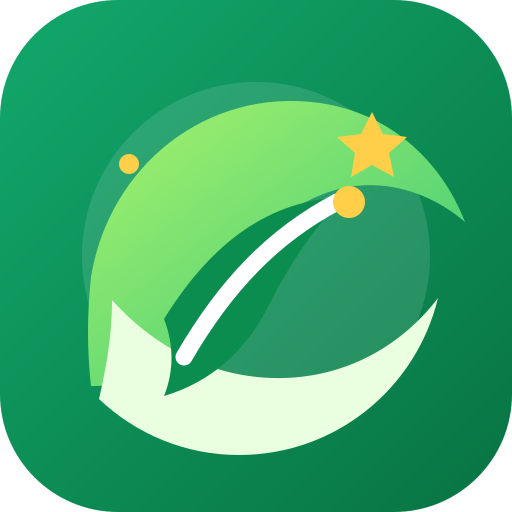

Identifica
Reconoce qué objetos son residuos electrónicos.

EcoTec ActaDescubre qué hacer con los aparatos electrónicos que ya no utilizas y conviértete en parte del cambio.
¡Vamos a explorar! →Este espacio es para aprender, explorar y descubrir cómo nuestras decisiones pueden ayudar al planeta. Recorre las misiones, juega el reto ecológico y comparte lo que aprendas. ¡Cada pequeño cambio cuenta y tú puedes ser parte de él! 💚
Son aparatos eléctricos o electrónicos que ya no se usan o dejaron de funcionar: celulares, computadoras, cables, cargadores, pilas y más. Algunos contienen materiales que pueden recuperarse y otros sustancias que requieren manejo especial.
Elige una misión para comenzar.
Reconoce qué objetos son residuos electrónicos.
Aprende qué hacer con cada aparato.
Pequeñas acciones que hacen una gran diferencia.
Comprueba lo que aprendiste con un juego.
Evita dejar aparatos, pilas o baterías en la basura común. Busca un programa de recolección adecuado.